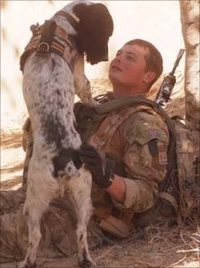

Some Dogs are Worth the Trouble
2011-03-10
 |
| Photo via BBC.co.uk |
{kind=link}
The body of a soldier who died along with his record breaking sniffer dog in Afghanistan last week will be returned home to the UK.
Lance Corporal Liam Tasker, from Kirkcaldy in Fife, was shot dead while on patrol in Helmand province.
The ashes of the 26-year-old's dog Theo will be flown home on the same plane.
L/Cpl Tasker, who was called a "rising star" by Army chiefs, was shot by Taliban snipers and Theo died of a seizure shortly after his master.We can argue over a lot of war-related matters on any given day, but let's take a moment to agree on this self-evident truth: animals can serve many worthwhile functions. From the "mutual friendship, snorgling, devotion and joy-bringing" that one correspondent described to me in an e-mail, to the innumerable life-enabling acts of service animals, to the sniffer dogs at the police department who can find a joint wrapped in a dirty diaper (or so I'm told), to the ones who pay the ultimate price on the battlefield.
And let's spare a thought for Liam Tasker's family and friends.
Labels: Miscellany, Dogs